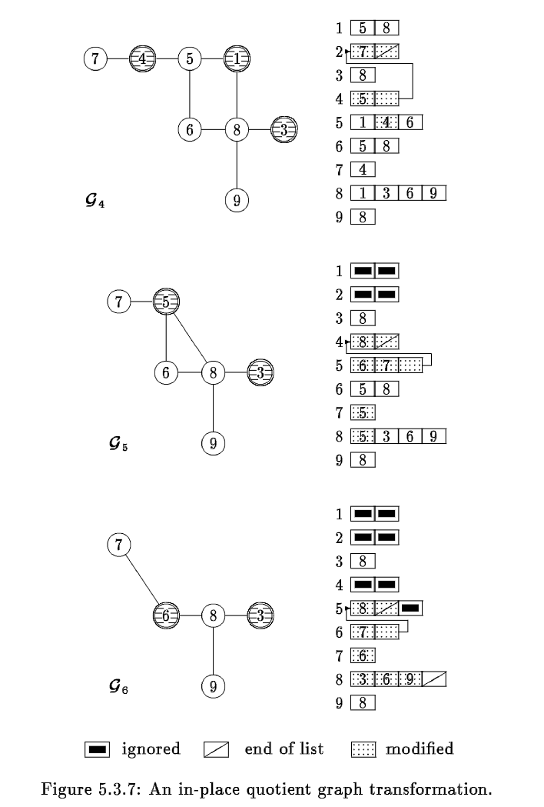

<!DOCTYPE html>


<html lang="zh-CN">


<head>
  <meta charset="utf-8" />
    
  <meta name="viewport" content="width=device-width, initial-scale=1, maximum-scale=1" />
  <title>
    稀疏矩阵算法最小度数算法六之最小度数算法子程序QMDQT |  VincereZhou&#39;s blog
  </title>
  <meta name="generator" content="hexo-theme-ayer">
  
  <link rel="shortcut icon" href="/images/mojie.jpg" />
  
  
<link rel="stylesheet" href="/dist/main.css">

  <link rel="stylesheet" href="https://cdn.jsdelivr.net/gh/Shen-Yu/cdn/css/remixicon.min.css">
  
<link rel="stylesheet" href="/css/custom.css">

  
  <script src="https://cdn.jsdelivr.net/npm/pace-js@1.0.2/pace.min.js"></script>
  
  

  

<link rel="alternate" href="/atom.xml" title="VincereZhou's blog" type="application/atom+xml">
</head>

</html>

<body>
  <div id="app">
    
      
    <main class="content on">
      <section class="outer">
  <article
  id="post-稀疏矩阵算法最小度数算法六之最小度数算法子程序QMDQT"
  class="article article-type-post"
  itemscope
  itemprop="blogPost"
  data-scroll-reveal
>
  <div class="article-inner">
    
    <header class="article-header">
       
<h1 class="article-title sea-center" style="border-left:0" itemprop="name">
  稀疏矩阵算法最小度数算法六之最小度数算法子程序QMDQT
</h1>
 

    </header>
     
    <div class="article-meta">
      <a href="/posts/e270c640/" class="article-date">
  <time datetime="2022-09-25T08:51:58.000Z" itemprop="datePublished">2022-09-25</time>
</a> 
  <div class="article-category">
    <a class="article-category-link" href="/categories/%E7%90%86%E8%AE%BA%E5%AD%A6%E4%B9%A0/">理论学习</a> / <a class="article-category-link" href="/categories/%E7%90%86%E8%AE%BA%E5%AD%A6%E4%B9%A0/%E7%A8%80%E7%96%8F%E7%9F%A9%E9%98%B5/">稀疏矩阵</a>
  </div>
  
<div class="word_count">
    <span class="post-time">
        <span class="post-meta-item-icon">
            <i class="ri-quill-pen-line"></i>
            <span class="post-meta-item-text"> 字数统计:</span>
            <span class="post-count">1.6k</span>
        </span>
    </span>

    <span class="post-time">
        &nbsp; | &nbsp;
        <span class="post-meta-item-icon">
            <i class="ri-book-open-line"></i>
            <span class="post-meta-item-text"> 阅读时长≈</span>
            <span class="post-count">7 分钟</span>
        </span>
    </span>
</div>
 
    </div>
      
    <div class="tocbot"></div>


  
    <div class="article-entry" itemprop="articleBody">
       
  <link rel="stylesheet" type="text/css" href="https://cdn.jsdelivr.net/hint.css/2.4.1/hint.min.css"><p>本章节介绍 <em>the minimum degree algorithm</em> ，我个人将其翻译为最小度数算法。这里我们看最小度数算法的子程序 QMDQT。</p>
<span id="more"></span>
<h1>QMDQT</h1>
<p><strong>(Quotient MD Quotient graph Transformation)</strong>，这个子程序执行商图的转换，生成相应的 <strong>(XADJ, ADJNCY)</strong>。新的消除的节点包含节点 ROOT 和 NBRHD 中的节点，在新的商图中生成一个以 ROOT 为代表的新的 supernode ，其在新商图的相邻集合在旧商图的 (RCHSZE, RCHSET) 中。</p>
<p>初始化之后，通过 <code>DO 200</code> 循环，将 (RCHSZE, RCHSET) 中的节点放到 ROOT 中的相邻列表中。如果没有足够的空间，程序会利用 NBRHD 集合中的节点的空间。</p>
<p>在退出之前，通过<code>DO 600</code> 循环将以 ROOT 为代表的相邻节点会加入到 RCHSET 中每一个节点的相邻列表中。</p>
<figure class="highlight fortran"><table><tr><td class="gutter"><pre><span class="line">1</span><br><span class="line">2</span><br><span class="line">3</span><br><span class="line">4</span><br><span class="line">5</span><br><span class="line">6</span><br><span class="line">7</span><br><span class="line">8</span><br><span class="line">9</span><br><span class="line">10</span><br><span class="line">11</span><br><span class="line">12</span><br><span class="line">13</span><br><span class="line">14</span><br><span class="line">15</span><br><span class="line">16</span><br><span class="line">17</span><br><span class="line">18</span><br><span class="line">19</span><br><span class="line">20</span><br><span class="line">21</span><br><span class="line">22</span><br><span class="line">23</span><br><span class="line">24</span><br><span class="line">25</span><br><span class="line">26</span><br><span class="line">27</span><br><span class="line">28</span><br><span class="line">29</span><br><span class="line">30</span><br><span class="line">31</span><br><span class="line">32</span><br><span class="line">33</span><br><span class="line">34</span><br><span class="line">35</span><br><span class="line">36</span><br><span class="line">37</span><br><span class="line">38</span><br><span class="line">39</span><br><span class="line">40</span><br><span class="line">41</span><br><span class="line">42</span><br><span class="line">43</span><br><span class="line">44</span><br><span class="line">45</span><br><span class="line">46</span><br><span class="line">47</span><br><span class="line">48</span><br><span class="line">49</span><br><span class="line">50</span><br><span class="line">51</span><br><span class="line">52</span><br><span class="line">53</span><br><span class="line">54</span><br><span class="line">55</span><br><span class="line">56</span><br><span class="line">57</span><br><span class="line">58</span><br><span class="line">59</span><br><span class="line">60</span><br><span class="line">61</span><br><span class="line">62</span><br><span class="line">63</span><br><span class="line">64</span><br><span class="line">65</span><br><span class="line">66</span><br><span class="line">67</span><br><span class="line">68</span><br><span class="line">69</span><br><span class="line">70</span><br><span class="line">71</span><br><span class="line">72</span><br><span class="line">73</span><br><span class="line">74</span><br><span class="line">75</span><br><span class="line">76</span><br><span class="line">77</span><br><span class="line">78</span><br></pre></td><td class="code"><pre><span class="line">C*************************************************************             <span class="number">1.</span></span><br><span class="line">C*************************************************************             <span class="number">2.</span></span><br><span class="line">C*******     QMDQT  ..... QUOT <span class="built_in">MIN</span> DEG QUOT TRANSFORM  *******             <span class="number">3.</span></span><br><span class="line">C*************************************************************             <span class="number">4.</span></span><br><span class="line">C*************************************************************             <span class="number">5.</span></span><br><span class="line"><span class="comment">C                                                                          6.</span></span><br><span class="line"><span class="comment">C     PURPOSE - THIS SUBROUTINE PERFORMS THE QUOTIENT GRAPH                7.</span></span><br><span class="line"><span class="comment">C        TRANSFORMATION AFTER A NODE HAS BEEN ELIMINATED.                  8.</span></span><br><span class="line"><span class="comment">C                                                                          9.</span></span><br><span class="line"><span class="comment">C     INPUT PARAMETERS -                                                  10.</span></span><br><span class="line"><span class="comment">C        ROOT - THE NODE JUST ELIMINATED. IT BECOMES THE                  11.</span></span><br><span class="line"><span class="comment">C               REPRESENTATIVE OF THE NEW SUPERNODE.                      12.</span></span><br><span class="line"><span class="comment">C        (XADJ, ADJNCY) - THE ADJACENCY STRUCTURE.                        13.</span></span><br><span class="line"><span class="comment">C        (RCHSZE, RCHSET) - THE REACHABLE SET OF ROOT IN THE              14.</span></span><br><span class="line"><span class="comment">C               OLD QUOTIENT GRAPH.                                       15.</span></span><br><span class="line"><span class="comment">C        NBRHD - THE NEIGHBORHOOD SET WHICH WILL BE MERGED                16.</span></span><br><span class="line"><span class="comment">C               WITH ROOT TO FORM THE NEW SUPERNODE.                      17.</span></span><br><span class="line"><span class="comment">C        MARKER - THE MARKER VECTOR.                                      18.</span></span><br><span class="line"><span class="comment">C                                                                         19.</span></span><br><span class="line"><span class="comment">C     UPDATED PARAMETER -                                                 20.</span></span><br><span class="line"><span class="comment">C        ADJNCY - BECOMES THE ADJNCY OF THE QUOTIENT GRAPH.               21.</span></span><br><span class="line"><span class="comment">C                                                                         22.</span></span><br><span class="line">C*************************************************************            <span class="number">23.</span></span><br><span class="line"><span class="comment">C                                                                         24.</span></span><br><span class="line">      <span class="function"><span class="keyword">SUBROUTINE</span></span>  QMDQT ( ROOT, XADJ, ADJNCY, MARKER,                     <span class="number">25.</span></span><br><span class="line">     <span class="number">1</span>                    RCHSZE, RCHSET, NBRHD )                         <span class="number">26.</span></span><br><span class="line"><span class="comment">C                                                                         27.</span></span><br><span class="line">C*************************************************************            <span class="number">28.</span></span><br><span class="line"><span class="comment">C                                                                         29.</span></span><br><span class="line">         <span class="keyword">INTEGER</span> ADJNCY(<span class="number">1</span>), MARKER(<span class="number">1</span>), RCHSET(<span class="number">1</span>), NBRHD(<span class="number">1</span>)                <span class="number">30.</span></span><br><span class="line">         <span class="keyword">INTEGER</span> XADJ(<span class="number">1</span>), INHD, IRCH, J, JSTRT, JSTOP, LINK,              <span class="number">31.</span></span><br><span class="line">     <span class="number">1</span>           NABOR, NODE, RCHSZE, ROOT                                <span class="number">32.</span></span><br><span class="line"><span class="comment">C                                                                         33.</span></span><br><span class="line">C*************************************************************            <span class="number">34.</span></span><br><span class="line"><span class="comment">C                                                                         35.</span></span><br><span class="line">         IRCH = <span class="number">0</span>                                                         <span class="number">36.</span></span><br><span class="line">         INHD = <span class="number">0</span>                                                         <span class="number">37.</span></span><br><span class="line">         NODE = ROOT                                                      <span class="number">38.</span></span><br><span class="line">  <span class="number">100</span>    JSTRT = XADJ(NODE)                                               <span class="number">39.</span></span><br><span class="line">         JSTOP = XADJ(NODE+<span class="number">1</span>) - <span class="number">2</span>                                         <span class="number">40.</span></span><br><span class="line">         <span class="keyword">IF</span> ( JSTOP .LT. JSTRT )  GO TO <span class="number">300</span>                               <span class="number">41.</span></span><br><span class="line"><span class="comment">C           ------------------------------------------------              42.</span></span><br><span class="line"><span class="comment">C           PLACE REACH NODES INTO THE ADJACENT LIST OF NODE              43.</span></span><br><span class="line"><span class="comment">C           ------------------------------------------------              44.</span></span><br><span class="line">            <span class="keyword">DO</span> <span class="number">200</span> J = JSTRT, JSTOP                                       <span class="number">45.</span></span><br><span class="line">               IRCH = IRCH + <span class="number">1</span>                                            <span class="number">46.</span></span><br><span class="line">               ADJNCY(J) = RCHSET(IRCH)                                   <span class="number">47.</span></span><br><span class="line">               <span class="keyword">IF</span> ( IRCH .GE. RCHSZE )  <span class="keyword">GOTO</span> <span class="number">400</span>                          <span class="number">48.</span></span><br><span class="line">  <span class="number">200</span>       <span class="keyword">CONTINUE</span>                                                      <span class="number">49.</span></span><br><span class="line"><span class="comment">C        ----------------------------------------------                   50.</span></span><br><span class="line"><span class="comment">C        LINK TO OTHER SPACE PROVIDED BY THE NBRHD SET.                   51.</span></span><br><span class="line"><span class="comment">C        ----------------------------------------------                   52.</span></span><br><span class="line">  <span class="number">300</span>    LINK = ADJNCY(JSTOP+<span class="number">1</span>)                                           <span class="number">53.</span></span><br><span class="line">         NODE = - LINK                                                    <span class="number">54.</span></span><br><span class="line">         <span class="keyword">IF</span> ( LINK .LT. <span class="number">0</span> )  <span class="keyword">GOTO</span> <span class="number">100</span>                                     <span class="number">55.</span></span><br><span class="line">            INHD = INHD + <span class="number">1</span>                                               <span class="number">56.</span></span><br><span class="line">            NODE = NBRHD(INHD)                                            <span class="number">57.</span></span><br><span class="line">            ADJNCY(JSTOP+<span class="number">1</span>) = - NODE                                      <span class="number">58.</span></span><br><span class="line">            GO TO <span class="number">100</span>                                                     <span class="number">59.</span></span><br><span class="line"><span class="comment">C        -------------------------------------------------------          60.</span></span><br><span class="line"><span class="comment">C        ALL REACHABLE NODES HAVE BEEN SAVED.  END THE ADJ LIST.          61.</span></span><br><span class="line"><span class="comment">C        ADD ROOT TO THE NBR LIST OF EACH NODE IN THE REACH SET.          62.</span></span><br><span class="line"><span class="comment">C        -------------------------------------------------------          63.</span></span><br><span class="line">  <span class="number">400</span>    ADJNCY(J+<span class="number">1</span>) = <span class="number">0</span>                                                  <span class="number">64.</span></span><br><span class="line">         <span class="keyword">DO</span> <span class="number">600</span> IRCH = <span class="number">1</span>, RCHSZE                                          <span class="number">65.</span></span><br><span class="line">            NODE = RCHSET(IRCH)                                           <span class="number">66.</span></span><br><span class="line">            <span class="keyword">IF</span> ( MARKER(NODE) .LT. <span class="number">0</span> )  <span class="keyword">GOTO</span> <span class="number">600</span>                          <span class="number">67.</span></span><br><span class="line">               JSTRT = XADJ(NODE)                                         <span class="number">68.</span></span><br><span class="line">               JSTOP = XADJ(NODE+<span class="number">1</span>) - <span class="number">1</span>                                   <span class="number">69.</span></span><br><span class="line">               <span class="keyword">DO</span> <span class="number">500</span> J = JSTRT, JSTOP                                    <span class="number">70.</span></span><br><span class="line">                  NABOR = ADJNCY(J)                                       <span class="number">71.</span></span><br><span class="line">                  <span class="keyword">IF</span> ( MARKER(NABOR) .GE. <span class="number">0</span> ) GO TO <span class="number">500</span>                   <span class="number">72.</span></span><br><span class="line">                     ADJNCY(J) = ROOT                                     <span class="number">73.</span></span><br><span class="line">                     <span class="keyword">GOTO</span> <span class="number">600</span>                                             <span class="number">74.</span></span><br><span class="line">  <span class="number">500</span>          <span class="keyword">CONTINUE</span>                                                   <span class="number">75.</span></span><br><span class="line">  <span class="number">600</span>    <span class="keyword">CONTINUE</span>                                                         <span class="number">76.</span></span><br><span class="line">         <span class="keyword">RETURN</span>                                                           <span class="number">77.</span></span><br><span class="line">      <span class="keyword">END</span>                                                                 <span class="number">78.</span></span><br></pre></td></tr></table></figure>
<p>下面开始逐行解析脚本，首先开始初始化，这里 <code>JSTOP = XADJ(NODE+1) - 2</code> 是将 ROOT 的相邻列表中的最后一个位置空出来不用。如果 <code>JSTOP .LT. JSTRT</code> ，那么说明 ROOT 的相邻列表中只有一个位置，那么要利用其 NBRHD 列表中其它 supernode 的空间，<code>GO TO 300</code> 。</p>
<figure class="highlight fortran"><table><tr><td class="gutter"><pre><span class="line">1</span><br><span class="line">2</span><br><span class="line">3</span><br><span class="line">4</span><br><span class="line">5</span><br><span class="line">6</span><br></pre></td><td class="code"><pre><span class="line">       IRCH = <span class="number">0</span>                                                         <span class="number">36.</span></span><br><span class="line">       INHD = <span class="number">0</span>                                                         <span class="number">37.</span></span><br><span class="line">       NODE = ROOT                                                      <span class="number">38.</span></span><br><span class="line"><span class="number">100</span>    JSTRT = XADJ(NODE)                                               <span class="number">39.</span></span><br><span class="line">       JSTOP = XADJ(NODE+<span class="number">1</span>) - <span class="number">2</span>                                         <span class="number">40.</span></span><br><span class="line">       <span class="keyword">IF</span> ( JSTOP .LT. JSTRT )  GO TO <span class="number">300</span>            </span><br></pre></td></tr></table></figure>
<p>下一步我们将 NODE 在旧商图中的相邻集合 RCHSET 中的节点放置到这些位置上。</p>
<p>如果 <code>IRCH .GE. RCHSZE</code> ，那就说明 NODE  的相邻列表空间已经足够存放 RCHSET 中的节点了，不需要利用其 NBRHD 列表中其它节点的空间，那么直接 <code>GO TO 400</code> 。</p>
<figure class="highlight fortran"><table><tr><td class="gutter"><pre><span class="line">1</span><br><span class="line">2</span><br><span class="line">3</span><br><span class="line">4</span><br><span class="line">5</span><br></pre></td><td class="code"><pre><span class="line">          <span class="keyword">DO</span> <span class="number">200</span> J = JSTRT, JSTOP                                       <span class="number">45.</span></span><br><span class="line">             IRCH = IRCH + <span class="number">1</span>                                            <span class="number">46.</span></span><br><span class="line">             ADJNCY(J) = RCHSET(IRCH)                                   <span class="number">47.</span></span><br><span class="line">             <span class="keyword">IF</span> ( IRCH .GE. RCHSZE )  <span class="keyword">GOTO</span> <span class="number">400</span>                          <span class="number">48.</span></span><br><span class="line"><span class="number">200</span>       <span class="keyword">CONTINUE</span>                                                      <span class="number">49.</span></span><br></pre></td></tr></table></figure>
<p>如果 NODE 的空间不够用，那么利用 NBRHD 列表中其它已经消元的 supernode 的空间。</p>
<p>首先<code>LINK = ADJNCY(JSTOP+1)</code> ，将 NODE 相邻列表的最后一个位置设为链接。<code>NODE = - LINK</code> 先将 <code>NODE</code> 设为 <code>- LINK</code> 。如果 LINK 小于 0 ，说明这个位置是一个链接，那么直接 <code>GOTO 100</code> (这在 ROOT 节点是不可能的，ROOT 节点最后一个位置不可能是链接。这是用于 NBRHD 中的节点的，如果这个节点是一个 supernode ,这些节点最后一个位置可能是链接)。</p>
<p>不然地话，INHD  加1，<code>NODE = NBRHD(INHD)</code> 将 NODE 修改为 NBRHD 的节点。<code>ADJNCY(JSTOP+1) = - NODE</code> 将 ROOT 最后一个位置改为 - NODE，然后<code>GO TO 100</code> ，利用其空间存放剩余的 RCHSET 中的节点（同样最后一个位置如果已经是链接则继续循环，不然最后一个位置改为链接，放 NBRHD 下一个节点的负数）。</p>
<figure class="highlight fortran"><table><tr><td class="gutter"><pre><span class="line">1</span><br><span class="line">2</span><br><span class="line">3</span><br><span class="line">4</span><br><span class="line">5</span><br><span class="line">6</span><br><span class="line">7</span><br></pre></td><td class="code"><pre><span class="line"><span class="number">300</span>    LINK = ADJNCY(JSTOP+<span class="number">1</span>)                                           <span class="number">53.</span></span><br><span class="line">       NODE = - LINK                                                    <span class="number">54.</span></span><br><span class="line">       <span class="keyword">IF</span> ( LINK .LT. <span class="number">0</span> )  <span class="keyword">GOTO</span> <span class="number">100</span>                                     <span class="number">55.</span></span><br><span class="line">          INHD = INHD + <span class="number">1</span>                                               <span class="number">56.</span></span><br><span class="line">          NODE = NBRHD(INHD)                                            <span class="number">57.</span></span><br><span class="line">          ADJNCY(JSTOP+<span class="number">1</span>) = - NODE                                      <span class="number">58.</span></span><br><span class="line">          GO TO <span class="number">100</span>                                                     <span class="number">59.</span></span><br></pre></td></tr></table></figure>
<p>循环结束之后，RCHSET 中的所有节点均存放好了。</p>
<p><code>ADJNCY(J+1) = 0</code> 将RCHSET 存放的最后一个位置之后的一个位置设为0，表示RCHSET  节点的<strong>终止位置</strong>。</p>
<figure class="highlight fortran"><table><tr><td class="gutter"><pre><span class="line">1</span><br></pre></td><td class="code"><pre><span class="line"><span class="number">400</span>    ADJNCY(J+<span class="number">1</span>) = <span class="number">0</span>                                                  <span class="number">64.</span></span><br></pre></td></tr></table></figure>
<p>反过来，将 RCHSET 中的所有节点的列表中添加 ROOT 节点。</p>
<p><code>DO 600</code> 循环遍历 RCHSET 的每一个节点，设为 NODE 。如果 NODE 的 MARKER 值低于0，那么说明这个节点已经合并到其它不可区分的节点中了，直接跳过这个节点。不然的话，<code>DO 500</code> 循环遍历 NODE 节点的所有相邻节点，设为 NABOR ；如果 NABOR 的 MARKER 值大于等于0，跳过这个节点。如果 NABOR 的 MARKER 值小于0（如果 NABOR 原来是消元节点，那么就说明 NABOR 和 ROOT 合并了；如果 NABOR 原来是未消元的节点，那么这个节点已经合并到其它不可区分的节点中了。无论是哪种情况，此时这个 NABOR 都可以修改了），那么将其修改为 ROOT ，然后跳出循环， <code>GO TO 600</code> ，运行下一个节点。</p>
<figure class="highlight fortran"><table><tr><td class="gutter"><pre><span class="line">1</span><br><span class="line">2</span><br><span class="line">3</span><br><span class="line">4</span><br><span class="line">5</span><br><span class="line">6</span><br><span class="line">7</span><br><span class="line">8</span><br><span class="line">9</span><br><span class="line">10</span><br><span class="line">11</span><br><span class="line">12</span><br><span class="line">13</span><br><span class="line">14</span><br></pre></td><td class="code"><pre><span class="line">       <span class="keyword">DO</span> <span class="number">600</span> IRCH = <span class="number">1</span>, RCHSZE                                          <span class="number">65.</span></span><br><span class="line">          NODE = RCHSET(IRCH)                                           <span class="number">66.</span></span><br><span class="line">          <span class="keyword">IF</span> ( MARKER(NODE) .LT. <span class="number">0</span> )  <span class="keyword">GOTO</span> <span class="number">600</span>                          <span class="number">67.</span></span><br><span class="line">             JSTRT = XADJ(NODE)                                         <span class="number">68.</span></span><br><span class="line">             JSTOP = XADJ(NODE+<span class="number">1</span>) - <span class="number">1</span>                                   <span class="number">69.</span></span><br><span class="line">             <span class="keyword">DO</span> <span class="number">500</span> J = JSTRT, JSTOP                                    <span class="number">70.</span></span><br><span class="line">                NABOR = ADJNCY(J)                                       <span class="number">71.</span></span><br><span class="line">                <span class="keyword">IF</span> ( MARKER(NABOR) .GE. <span class="number">0</span> ) GO TO <span class="number">500</span>                   <span class="number">72.</span></span><br><span class="line">                   ADJNCY(J) = ROOT                                     <span class="number">73.</span></span><br><span class="line">                   <span class="keyword">GOTO</span> <span class="number">600</span>                                             <span class="number">74.</span></span><br><span class="line"><span class="number">500</span>          <span class="keyword">CONTINUE</span>                                                   <span class="number">75.</span></span><br><span class="line"><span class="number">600</span>    <span class="keyword">CONTINUE</span>                                                         <span class="number">76.</span></span><br><span class="line">       <span class="keyword">RETURN</span>                                                           <span class="number">77.</span></span><br><span class="line">    <span class="keyword">END</span>                                                                 <span class="number">78.</span></span><br></pre></td></tr></table></figure>
<p>其实，这里只将第一个可以修改的节点中改为 ROOT ，就完成了添加 ROOT 节点的任务，实际上此时  NODE 的    商图相邻位点中可能有重复的 ROOT 节点或其它可以删除的位点（MARKER 值小于0）。</p>
<p>以下图从   到  的形成过程中，节点 8 原始相邻节点为 5,3,6,9，按照上面的脚本遍历，第一个相邻节点 5 的 MARKER 值为 -1，改为 6 ，然后退出循环，因此<strong>节点 8 修改后的相邻列表实际为 6,3,6,9</strong>，存在重复的 ROOT 节点 6，并不是下面的 3,6,9 。</p>
<p></p>
<h1>参考文献</h1>
<ol>
<li>George A, Liu J, Ng E. Computer solution of sparse linear systems[J]. Oak Ridge National Laboratory, 1994.</li>
</ol>
 
      <!-- reward -->
      
    </div>
    

    <!-- copyright -->
    
    <div class="declare">
      <ul class="post-copyright">
        <li>
          <i class="ri-copyright-line"></i>
          <strong>版权声明： </strong>
          
          本博客所有文章除特别声明外，著作权归作者所有。转载请注明出处！
          
        </li>
      </ul>
    </div>
    
    <footer class="article-footer">
       
  <ul class="article-tag-list" itemprop="keywords"><li class="article-tag-list-item"><a class="article-tag-list-link" href="/tags/%E7%90%86%E8%AE%BA%E5%AD%A6%E4%B9%A0/" rel="tag">理论学习</a></li><li class="article-tag-list-item"><a class="article-tag-list-link" href="/tags/%E7%A8%80%E7%96%8F%E7%9F%A9%E9%98%B5/" rel="tag">稀疏矩阵</a></li></ul>

    </footer>
  </div>

   
  <nav class="article-nav">
    
      <a href="/posts/3082be2e/" class="article-nav-link">
        <strong class="article-nav-caption">上一篇</strong>
        <div class="article-nav-title">
          
            稀疏矩阵算法最小度数算法七之最小度数算法子程序QMDUPD
          
        </div>
      </a>
    
    
      <a href="/posts/cbfa6df5/" class="article-nav-link">
        <strong class="article-nav-caption">下一篇</strong>
        <div class="article-nav-title">稀疏矩阵算法最小度数算法五之最小度数算法子程序QMDRCH</div>
      </a>
    
  </nav>

   
<!-- valine评论 -->
<div id="vcomments-box">
  <div id="vcomments"></div>
</div>
<script src="//cdn1.lncld.net/static/js/3.0.4/av-min.js"></script>
<script src="https://cdn.jsdelivr.net/npm/valine@1.4.14/dist/Valine.min.js"></script>
<script>
  new Valine({
    el: "#vcomments",
    app_id: "yHN3kf7fHt5wvleM2DVoHLdY-gzGzoHsz",
    app_key: "RPIwmdftljIzOtAULwc7JCAp",
    path: window.location.pathname,
    avatar: "monsterid",
    placeholder: "靓仔，看完留个评论再走哇！\n只需要填入昵称和邮箱就可以了",
    recordIP: true,
  });
  const infoEle = document.querySelector("#vcomments .info");
  if (infoEle && infoEle.childNodes && infoEle.childNodes.length > 0) {
    infoEle.childNodes.forEach(function (item) {
      item.parentNode.removeChild(item);
    });
  }
</script>
<style>
  #vcomments-box {
    padding: 5px 30px;
  }

  @media screen and (max-width: 800px) {
    #vcomments-box {
      padding: 5px 0px;
    }
  }

  #vcomments-box #vcomments {
    background-color: #fff;
  }

  .v .vlist .vcard .vh {
    padding-right: 20px;
  }

  .v .vlist .vcard {
    padding-left: 10px;
  }
</style>

 
   
     
</article>

</section>
      <footer class="footer">
  <div class="outer">
    <ul>
      <li>
        Copyrights &copy;
        2019-2023
        <i class="ri-heart-fill heart_icon"></i> Vincere Zhou
      </li>
    </ul>
    <ul>
      <li>
        
        
        <span>
  <span><i class="ri-user-3-fill"></i>访问人数:<span id="busuanzi_value_site_uv"></span></s>
  <span class="division">|</span>
  <span><i class="ri-eye-fill"></i>浏览次数:<span id="busuanzi_value_page_pv"></span></span>
</span>
        
      </li>
    </ul>
    <ul>
      
    </ul>
    <ul>
      
    </ul>
    <ul>
      <li>
        <!-- cnzz统计 -->
        
      </li>
    </ul>

    <!-- 与只只在一起天数 -->
	<ul>
		<li><span id="lovetime_span"></span></li>
	</ul>
    <script type="text/javascript">			
        function show_runtime() {
            window.setTimeout("show_runtime()", 1000);
            X = new Date("03/04/2021 22:11:00");
            Y = new Date();
            T = (Y.getTime() - X.getTime());
            M = 24 * 60 * 60 * 1000;
            a = T / M;
            A = Math.floor(a);
            b = (a - A) * 24;
            B = Math.floor(b);
            c = (b - B) * 60;
            C = Math.floor((b - B) * 60);
            D = Math.floor((c - C) * 60);
            lovetime_span.innerHTML = "只只和男朋友在一起了 " + A + "天" + B + "小时" + C + "分" + D + "秒"
        }
        show_runtime();
    </script>

  </div>
</footer>
      <div class="float_btns">
        <div class="totop" id="totop">
  <i class="ri-arrow-up-line"></i>
</div>

      </div>
    </main>
    <aside class="sidebar on">
      <button class="navbar-toggle"></button>
<nav class="navbar">
  
  <div class="logo">
    <a href="/"></a>
  </div>
  
  <ul class="nav nav-main">
    
    <li class="nav-item">
      <a class="nav-item-link" href="/">主页</a>
    </li>
    
    <li class="nav-item">
      <a class="nav-item-link" href="/archives">归档</a>
    </li>
    
    <li class="nav-item">
      <a class="nav-item-link" href="/categories">分类</a>
    </li>
    
    <li class="nav-item">
      <a class="nav-item-link" href="/tags">标签</a>
    </li>
    
    <li class="nav-item">
      <a class="nav-item-link" href="/friends">友链</a>
    </li>
    
    <li class="nav-item">
      <a class="nav-item-link" href="/about">关于</a>
    </li>
    
  </ul>
</nav>
<nav class="navbar navbar-bottom">
  <ul class="nav">
    <li class="nav-item">
      
      <a class="nav-item-link nav-item-search"  title="搜索">
        <i class="ri-search-line"></i>
      </a>
      
      
      <a class="nav-item-link" target="_blank" href="/atom.xml" title="RSS Feed">
        <i class="ri-rss-line"></i>
      </a>
      
    </li>
  </ul>
</nav>
<div class="search-form-wrap">
  <div class="local-search local-search-plugin">
  <input type="search" id="local-search-input" class="local-search-input" placeholder="Search...">
  <div id="local-search-result" class="local-search-result"></div>
</div>
</div>
    </aside>
    <script>
      if (window.matchMedia("(max-width: 768px)").matches) {
        document.querySelector('.content').classList.remove('on');
        document.querySelector('.sidebar').classList.remove('on');
      }
    </script>
    <div id="mask"></div>

<!-- #reward -->
<div id="reward">
  <span class="close"><i class="ri-close-line"></i></span>
  <p class="reward-p"><i class="ri-cup-line"></i>请我喝杯茶吧~</p>
  <div class="reward-box">
    
    <div class="reward-item">
      
      <span class="reward-type">支付宝</span>
    </div>
    
    
    <div class="reward-item">
      
      <span class="reward-type">微信</span>
    </div>
    
  </div>
</div>
    
<script src="/js/jquery-2.0.3.min.js"></script>


<script src="/js/lazyload.min.js"></script>

<!-- Tocbot -->


<script src="/js/tocbot.min.js"></script>

<script>
  tocbot.init({
    tocSelector: '.tocbot',
    contentSelector: '.article-entry',
    headingSelector: 'h1, h2, h3, h4, h5, h6',
    hasInnerContainers: true,
    scrollSmooth: true,
    scrollContainer: 'main',
    positionFixedSelector: '.tocbot',
    positionFixedClass: 'is-position-fixed',
    fixedSidebarOffset: 'auto'
  });
</script>

<script src="https://cdn.jsdelivr.net/npm/jquery-modal@0.9.2/jquery.modal.min.js"></script>
<link rel="stylesheet" href="https://cdn.jsdelivr.net/npm/jquery-modal@0.9.2/jquery.modal.min.css">
<script src="https://cdn.jsdelivr.net/npm/justifiedGallery@3.7.0/dist/js/jquery.justifiedGallery.min.js"></script>

<script src="/dist/main.js"></script>

<!-- ImageViewer -->

<!-- Root element of PhotoSwipe. Must have class pswp. -->
<div class="pswp" tabindex="-1" role="dialog" aria-hidden="true">

    <!-- Background of PhotoSwipe. 
         It's a separate element as animating opacity is faster than rgba(). -->
    <div class="pswp__bg"></div>

    <!-- Slides wrapper with overflow:hidden. -->
    <div class="pswp__scroll-wrap">

        <!-- Container that holds slides. 
            PhotoSwipe keeps only 3 of them in the DOM to save memory.
            Don't modify these 3 pswp__item elements, data is added later on. -->
        <div class="pswp__container">
            <div class="pswp__item"></div>
            <div class="pswp__item"></div>
            <div class="pswp__item"></div>
        </div>

        <!-- Default (PhotoSwipeUI_Default) interface on top of sliding area. Can be changed. -->
        <div class="pswp__ui pswp__ui--hidden">

            <div class="pswp__top-bar">

                <!--  Controls are self-explanatory. Order can be changed. -->

                <div class="pswp__counter"></div>

                <button class="pswp__button pswp__button--close" title="Close (Esc)"></button>

                <button class="pswp__button pswp__button--share" style="display:none" title="Share"></button>

                <button class="pswp__button pswp__button--fs" title="Toggle fullscreen"></button>

                <button class="pswp__button pswp__button--zoom" title="Zoom in/out"></button>

                <!-- Preloader demo http://codepen.io/dimsemenov/pen/yyBWoR -->
                <!-- element will get class pswp__preloader--active when preloader is running -->
                <div class="pswp__preloader">
                    <div class="pswp__preloader__icn">
                        <div class="pswp__preloader__cut">
                            <div class="pswp__preloader__donut"></div>
                        </div>
                    </div>
                </div>
            </div>

            <div class="pswp__share-modal pswp__share-modal--hidden pswp__single-tap">
                <div class="pswp__share-tooltip"></div>
            </div>

            <button class="pswp__button pswp__button--arrow--left" title="Previous (arrow left)">
            </button>

            <button class="pswp__button pswp__button--arrow--right" title="Next (arrow right)">
            </button>

            <div class="pswp__caption">
                <div class="pswp__caption__center"></div>
            </div>

        </div>

    </div>

</div>

<link rel="stylesheet" href="https://cdn.jsdelivr.net/npm/photoswipe@4.1.3/dist/photoswipe.min.css">
<link rel="stylesheet" href="https://cdn.jsdelivr.net/npm/photoswipe@4.1.3/dist/default-skin/default-skin.min.css">
<script src="https://cdn.jsdelivr.net/npm/photoswipe@4.1.3/dist/photoswipe.min.js"></script>
<script src="https://cdn.jsdelivr.net/npm/photoswipe@4.1.3/dist/photoswipe-ui-default.min.js"></script>

<script>
    function viewer_init() {
        let pswpElement = document.querySelectorAll('.pswp')[0];
        let $imgArr = document.querySelectorAll(('.article-entry img:not(.reward-img)'))

        $imgArr.forEach(($em, i) => {
            $em.onclick = () => {
                // slider展开状态
                // todo: 这样不好，后面改成状态
                if (document.querySelector('.left-col.show')) return
                let items = []
                $imgArr.forEach(($em2, i2) => {
                    let img = $em2.getAttribute('data-idx', i2)
                    let src = $em2.getAttribute('data-target') || $em2.getAttribute('src')
                    let title = $em2.getAttribute('alt')
                    // 获得原图尺寸
                    const image = new Image()
                    image.src = src
                    items.push({
                        src: src,
                        w: image.width || $em2.width,
                        h: image.height || $em2.height,
                        title: title
                    })
                })
                var gallery = new PhotoSwipe(pswpElement, PhotoSwipeUI_Default, items, {
                    index: parseInt(i)
                });
                gallery.init()
            }
        })
    }
    viewer_init()
</script>

<!-- MathJax -->

<script type="text/x-mathjax-config">
  MathJax.Hub.Config({
      tex2jax: {
          inlineMath: [ ['$','$'], ["\\(","\\)"]  ],
          processEscapes: true,
          skipTags: ['script', 'noscript', 'style', 'textarea', 'pre', 'code']
      }
  });

  MathJax.Hub.Queue(function() {
      var all = MathJax.Hub.getAllJax(), i;
      for(i=0; i < all.length; i += 1) {
          all[i].SourceElement().parentNode.className += ' has-jax';
      }
  });
</script>

<script src="https://cdn.jsdelivr.net/npm/mathjax@2.7.6/unpacked/MathJax.js?config=TeX-AMS-MML_HTMLorMML"></script>
<script>
  var ayerConfig = {
    mathjax: true
  }
</script>

<!-- Katex -->

<!-- busuanzi  -->


<script src="/js/busuanzi-2.3.pure.min.js"></script>


<!-- ClickLove -->

<!-- ClickBoom1 -->

<!-- ClickBoom2 -->

<!-- CodeCopy -->


<link rel="stylesheet" href="/css/clipboard.css">

<script src="https://cdn.jsdelivr.net/npm/clipboard@2/dist/clipboard.min.js"></script>
<script>
  function wait(callback, seconds) {
    var timelag = null;
    timelag = window.setTimeout(callback, seconds);
  }
  !function (e, t, a) {
    var initCopyCode = function(){
      var copyHtml = '';
      copyHtml += '<button class="btn-copy" data-clipboard-snippet="">';
      copyHtml += '<i class="ri-file-copy-2-line"></i><span>COPY</span>';
      copyHtml += '</button>';
      $(".highlight .code pre").before(copyHtml);
      $(".article pre code").before(copyHtml);
      var clipboard = new ClipboardJS('.btn-copy', {
        target: function(trigger) {
          return trigger.nextElementSibling;
        }
      });
      clipboard.on('success', function(e) {
        let $btn = $(e.trigger);
        $btn.addClass('copied');
        let $icon = $($btn.find('i'));
        $icon.removeClass('ri-file-copy-2-line');
        $icon.addClass('ri-checkbox-circle-line');
        let $span = $($btn.find('span'));
        $span[0].innerText = 'COPIED';
        
        wait(function () { // 等待两秒钟后恢复
          $icon.removeClass('ri-checkbox-circle-line');
          $icon.addClass('ri-file-copy-2-line');
          $span[0].innerText = 'COPY';
        }, 2000);
      });
      clipboard.on('error', function(e) {
        e.clearSelection();
        let $btn = $(e.trigger);
        $btn.addClass('copy-failed');
        let $icon = $($btn.find('i'));
        $icon.removeClass('ri-file-copy-2-line');
        $icon.addClass('ri-time-line');
        let $span = $($btn.find('span'));
        $span[0].innerText = 'COPY FAILED';
        
        wait(function () { // 等待两秒钟后恢复
          $icon.removeClass('ri-time-line');
          $icon.addClass('ri-file-copy-2-line');
          $span[0].innerText = 'COPY';
        }, 2000);
      });
    }
    initCopyCode();
  }(window, document);
</script>


<!-- CanvasBackground -->


    
  </div>
<script src="/live2dw/lib/L2Dwidget.min.js?094cbace49a39548bed64abff5988b05"></script><script>L2Dwidget.init({"pluginRootPath":"live2dw/","pluginJsPath":"lib/","pluginModelPath":"assets/","tagMode":false,"debug":false,"model":{"jsonPath":"live2d-widget-model-wanko"},"display":{"position":"left","width":150,"height":300,"hOffset":80,"vOffset":-70},"mobile":{"show":false,"scale":0.5},"log":false});</script></body>

</html>